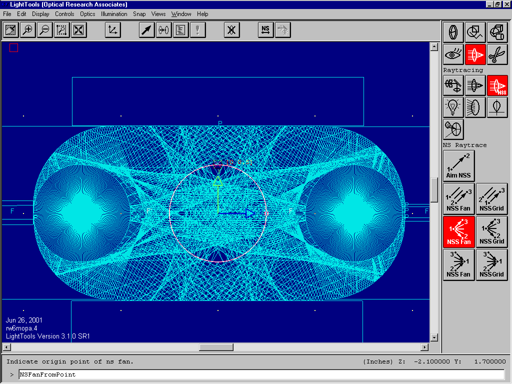
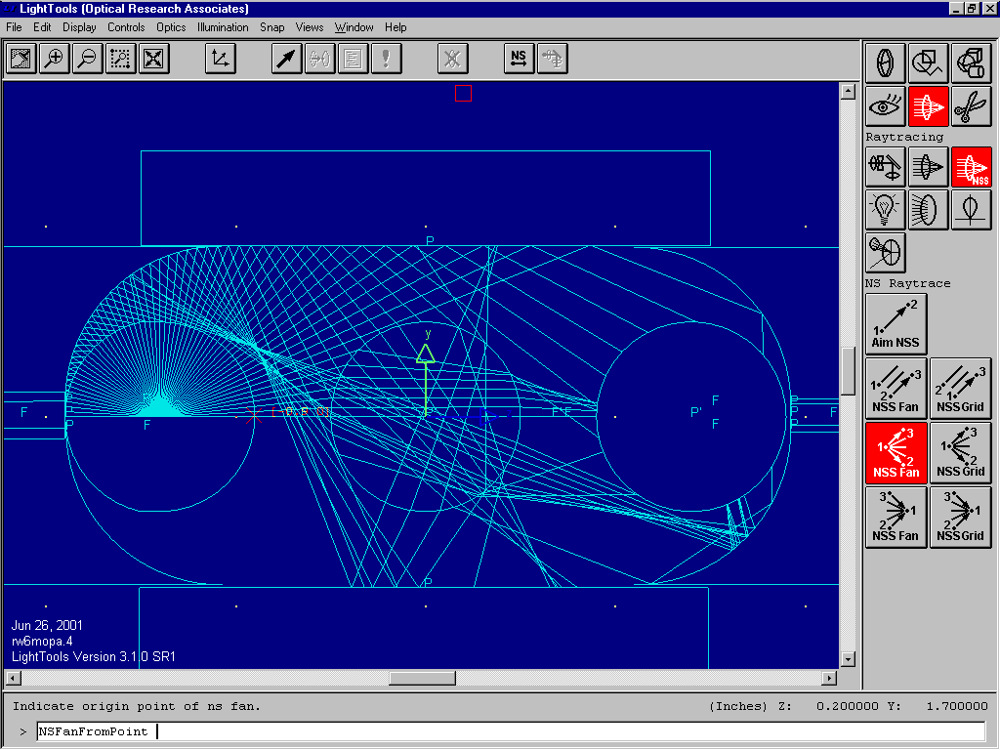

Home Return to Main Page
Dual Flashlamp 2D Cavity Ray Trace


Above is the two dimensional
cavity ray trace as seen from the end walls. This design was adopted for the
amplifiers for the RW-MOPA version 6. This particular dimension choosen is a
0.665" x 1.45" cavity for the 9mm flashlamps and 3/8" rod. Each
flashlamp pumps radially as follows: 39 degrees of direct to rod, 39 degrees
intercepted by other flashlamp , 24 degrees of double bounce to the rod, 121
degrees of single bounce to rod, 137 degrees intercepted by the flashlamp
itself. This arrangement allows 184 degrees of radiation from each flashlamp to
intercept the rod and concentrating most of the energy in the inner two thirds
of the rod. The focused light seen is from the curved reflectors behind the
flashlamps and the laser rod focusing the light. The focused light not absorb
by the rod will be focused onto the flashlamps and will be reabsorbed by the
blackbody radiation source.